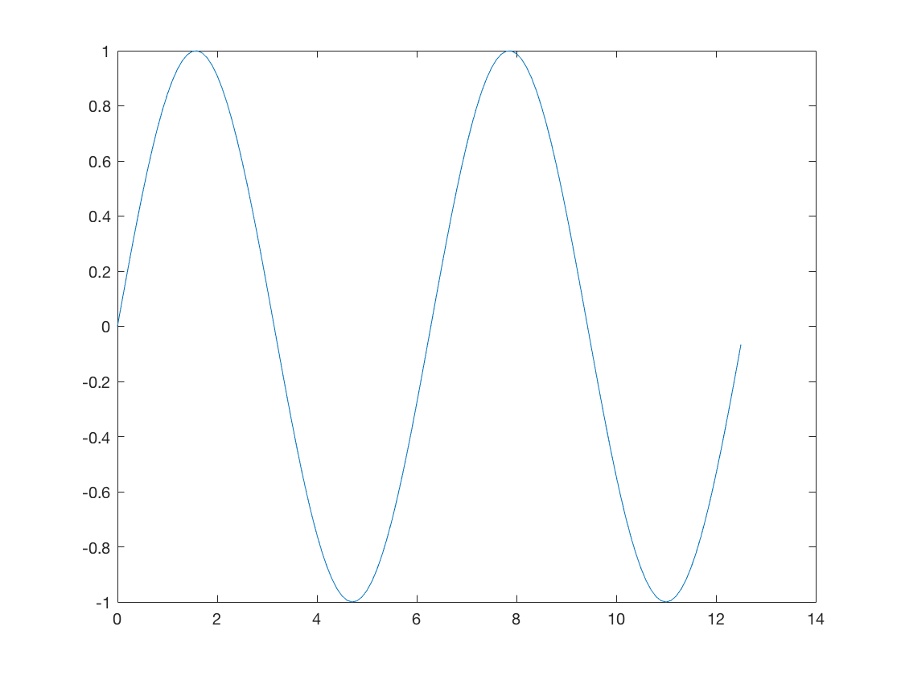
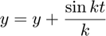
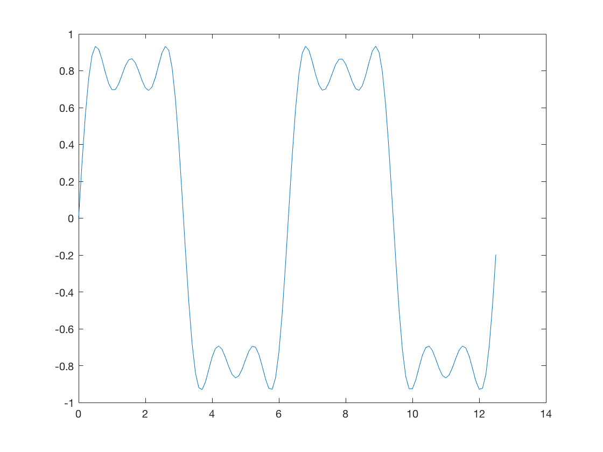
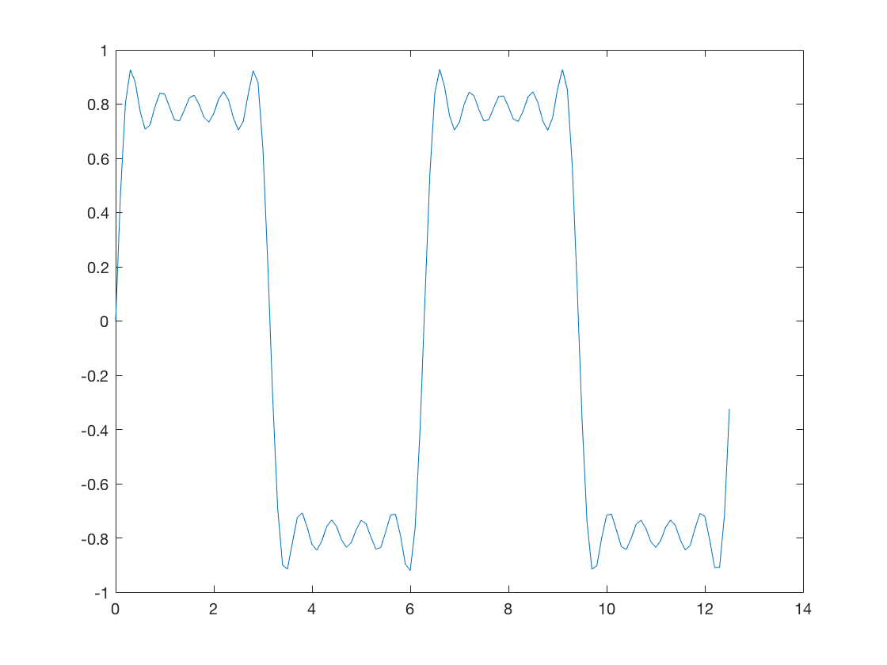

Square Waves from Sine Waves
The Fourier series expansion for a square-wave is made up of a sum of odd harmonics, as shown here using MATLAB®.
Contents
Add an Odd Harmonic and Plot It
t = 0:.1:pi*4; y = sin(t); plot(t,y);
In each iteration of the for loop add an odd harmonic to y. As k increases, the output approximates a square wave with increasing accuracy.
for k = 3:2:9
Perform the following mathematical operation at each iteration:

Display every other plot:
y = y + sin(k*t)/k;
if mod(k,4)==1
display(sprintf('When k = %.1f',k));
display('Then the plot is:');
cla
plot(t,y)
end
When k = 5.0 Then the plot is:
When k = 9.0 Then the plot is:
end
Note About Gibbs Phenomenon
Even though the approximations are constantly improving, they will never be exact because of the Gibbs phenomenon, or ringing.